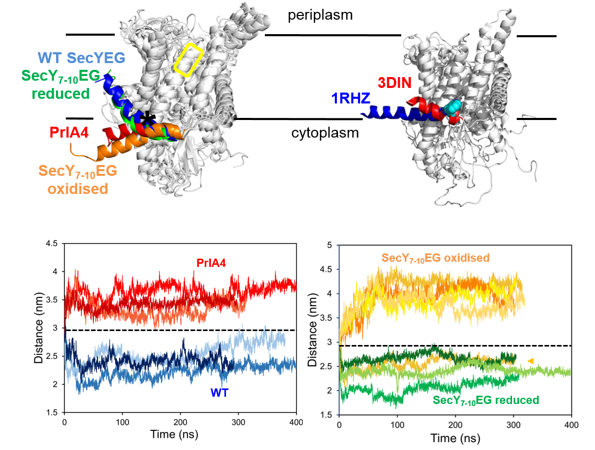

Membrane protein biophysics
We're interested in how structural changes in integral membrane proteins relate to function. A strong target for this area of research is the bacterial Sec translocon, a highly dynamic membrane protein with a distinct functon - the recognition and transport of unfolded pre-proteins.

As a key part of the Sec-transport pathway, substrate proteins are targeted to SecYEG by a specialised ‘signal sequence’. The sequence also acts to unlock the translocon, priming it for transport. To investigate this process, we analysed the Sec translocon using equilibrium MD. We simulated 3 x ~400 ns simulations of 6 variants of the translocon, producing over 6 µs of MD data in all. Two of these variants were designed to specifically cpature the translocon in an unlocked conformation, recreating recent structural data
The simulation data showed that one of the most prominent effects of trapiing in this conformation could be seen in the so-called 'amphipathic helix' of SecE. This is seen to tilt dramatically, see the 'PrlA4' and 'SecY7-10EG oxidised' data below.
We used a range of biophysical analyses to test this, including production of the same variants in vitro and their analysis using denaturation. We create single tryptophan variants of SecYEG, and used this to understand the unfolding process. We localised the primary conformational change in the variants associated with signal sequence binding to the SecE amphipathic helix - validating the MD data above.

We produced additional data linking the effect of signal sequence binding to the reorganisation of the SecA binding site on SecY. Together, the data suggest the converging effects of the signal sequence and SecA at the cytoplasmic face of SecYEG are decisive for the intercalation and translocation of pre-protein through the SecY channel